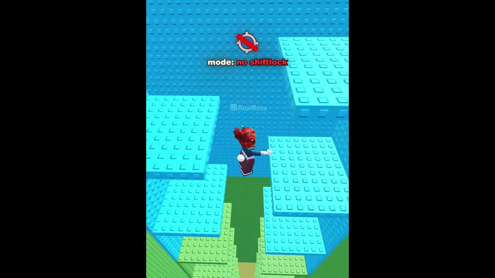

TREND SHORTS26 octombrie 2026
🗼 Un turn, cinci reguli tâmpite și 1,5 milioane de views

RealRosa are un short în care face același obby de mai multe ori, iar la fiecare rundă se adaugă o regulă nouă, tot mai grea. Nu e Steal An Egg, dar formula merge pe orice joc. Copiem formula, nu filmarea. ⚠️ Hook-urile și formula sunt deduse din cadre și din descriere, nu spuse de creator.
📌 Clipul original
- 🎥 RealRosa, „🤩 roblox challenge”
- 📊 ~1,56M vizualizări în ~39 de ore (~142K pe oră), la 22 oct seara, orientativ (citite de Spionul).
- ▶️ https://www.youtube.com/shorts/d37NaoG3MTU
- 🔎 TikTok, de căutat în aplicație: „roblox challenge no shiftlock” sau „roblox obby blind challenge”
🎬 Formula
- Același obby în fiecare rundă, ca să se vadă clar diferența
- Fiecare rundă adaugă o regulă: stânga-dreapta, fără shiftlock, legat la ochi…
- Pe ecran apare un rând de text „mode: …” cu regula nouă
💡 Ideea VEXU
- 🪝 Hook: „Încerc să fur un ou… cu cinci reguli din ce în ce mai proaste.”
- 📝 Text pe ecran: „mod: fără sărituri”, apoi „mod: cu ochii închiși” și tot așa.
- 🥚 Doar furatul și fuga înapoi la bază, filmate de noi.
Follow pe TikTok @vexu_online și abonare pe YouTube la VEXU Online. Follow = Au ce bile! 💥